七種膠囊是七組物品，外觀、煙霧、音效各不相同。
空膠囊裝了車煙霧款式
卡通膠囊
白色卡通煙霧，卡通音效
橘・素色帶
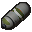
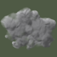
寫實膠囊
灰色煙霧，機械與氣壓聲
橄欖綠・雙線
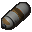
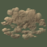
塵土膠囊
塵土貼地炸開，重物落地聲
土黃・上下雙色
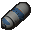
蒸汽膠囊
白色蒸氣，蒸汽噴發聲
鋼藍・鉚釘
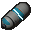
科幻膠囊
光柱與地面光環，能量聲
青・光帶
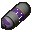
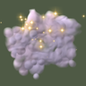
魔法膠囊
淡紫煙霧與星芒，魔法聲
紫・星點
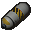
衝擊膠囊
白光與地面衝擊波，煙霧彈聲
黃・警示斜紋
七種只差外觀和音效，還是也差功能？
色盲玩家也分得出：每種有自己的色帶花紋。
一般
紅綠色盲模擬
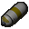
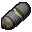
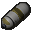
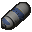
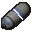
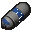
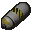
素色雙線雙色鉚釘光帶星點斜紋
物品名稱用「款式＋膠囊」，裝車後再接車名。
卡通膠囊
蒸汽膠囊
蒸汽膠囊：騎士·D6
魔法膠囊：富蘭克林·瓦盧林
28 段音效全部不同：要補錄 5 段。
丟出彈開收車按鈕
卡通●●●●
寫實●●●●
塵土●●●✚
蒸汽✚●●●
科幻●●●●
魔法●●●●
衝擊✚●✚✚
新音效怎麼定稿？
管理員在「種類」分頁逐種開關使用與戰利品。
車輛膠囊管理×
紀錄設定種類戰利品
款式使用戰利品商店
卡通膠囊
白色卡通煙霧
寫實膠囊
灰色煙霧
塵土膠囊
塵土貼地炸開
蒸汽膠囊
白色蒸氣
科幻膠囊
光柱與光環
魔法膠囊
淡紫煙霧與星芒
衝擊膠囊
已停用：不能收車
戰利品由開著的 5 種平分。地點和比重在「戰利品」分頁。
取消變更套用
新伺服器預設開哪些種類？
停用一種只擋收車，已裝車的照樣能展開。
關掉「使用」
✗收車：子選單裡那一種變灰，提示框寫出原因。
✓丟出、按按鈕：照常。車不會被關在膠囊裡。
✓展開後歸還的空膠囊：還是同一種。
✗戰利品：不再出現。
!商店：照常賣，要到經濟中心下架。
關掉「戰利品」
✗戰利品：不再出現。
✓其他照常。
地點的戰利品總量不變，由開著的種類平分。
「上架…」把那種空膠囊送到經濟中心的草稿。
「上架」要做到哪裡？
AdminPanel.lua:619 · onListInShop()
七種的開關存成沙盒選項，效果樣式選項拿掉。
收車時，玩家從子選單選要用哪一種膠囊。
進入車輛
車輛機械
收進膠囊▸
拖曳
卡通膠囊×2
蒸汽膠囊×1
衝擊膠囊×1
收進蒸汽膠囊
✓ 你有這台車的鑰匙
✓ 引擎已熄火，車上沒有人
車上 3 件物品會一起收進膠囊。需要 10 秒。
只帶一種時不出子選單，提示框寫出用哪種。
進入車輛
收進膠囊
拖曳
收進膠囊
✓ 你有這台車的鑰匙
✓ 引擎已熄火，車上沒有人
✓ 背包裡有空膠囊：蒸汽膠囊
車上 3 件物品會一起收進膠囊。需要 10 秒。
空膠囊提示框寫出款式；停用的寫出原因。
蒸汽膠囊
- 款式
- 蒸汽：白色蒸氣，蒸汽噴發聲
空膠囊。站在停著的車旁，從車輛選單收進膠囊。
衝擊膠囊
- 款式
- 衝擊：白光與地面衝擊波，煙霧彈聲
! 管理員停用了這種膠囊，現在不能收車。
膠囊名稱在每位玩家畫面上都是他的語言。
中文用戶端
蒸汽膠囊：騎士·D6
English client
Steam Capsule: Chevalier D6
全服看到的煙霧和音效，跟著那顆膠囊的款式。
Effects.lua:73 · Effects.play()
現有介面審查判定 Block，這次改版一起修好。
- HIGH・顏色 管理面板半透明，說明字對比只有 3.76–4.44:1。改：視窗不透明（
opaque = true）。 - HIGH・顏色 收車選單和落點游標的提示框半透明，紅色原因列 3.35–4.21:1。改：提示框底色不透明。
- HIGH・字體排印 選項說明只畫第一段的兩行，其餘截掉。改：完整換行；逐項說明放進 tooltip。
- HIGH・無障礙 滑桿和 chip 沒有焦點名稱，用鍵盤或手把時沒有說明。改：加
_focusLabel和_focusGroup。 - HIGH・版面 選項不能捲動；視窗矮於 727 px 時「套用」被裁掉。改：選項放進捲動區，套用列固定在底部。
- HIGH・顏色 沒權限的選項用紅字，滑鼠移上去只剩 1.09:1。改：拿掉 badColor，原因留在提示框。
- MEDIUM・無障礙 伺服器拒絕收車的通知 3 秒就消失。改：換成要按「知道了」的對話框。
- LOW・文字 英文等語系用「change(s)」拼複數。改：「Changes sent: %1.」這種句型。
- LOW・文字 中文提示框用半形逗號列舉改裝。改：分隔符走翻譯鍵，中文用「、」。
管理面板半透明，背後的字疊在說明上。
沒權限的選項懸停時，紅字幾乎看不見。
共用：一張 M.TYPES 表定義七種膠囊。
ITEM_EMPTY、ITEM_LOADED，全部改走 M.typeOf 和 M.isLoaded。經濟中心的註冊從 1 次變 7 次，每種裝車膠囊各一次。不變：收車條件、紀錄與補回、經濟交易流程。
- 收車條件、收車時間、權限（含 Vehicle Manager）七種都一樣。
- 紀錄、補回車輛、當機判定、貨物鎖不分款式。
- 裝車膠囊在市場與拍賣的交易流程照舊，只是註冊 7 次。
- 戰利品的四個地點、開關和比重照舊。
- 殭屍聽到的範圍仍是一個全服設定，不分款式。
- 煙霧貼圖沿用現有七套，不重畫。